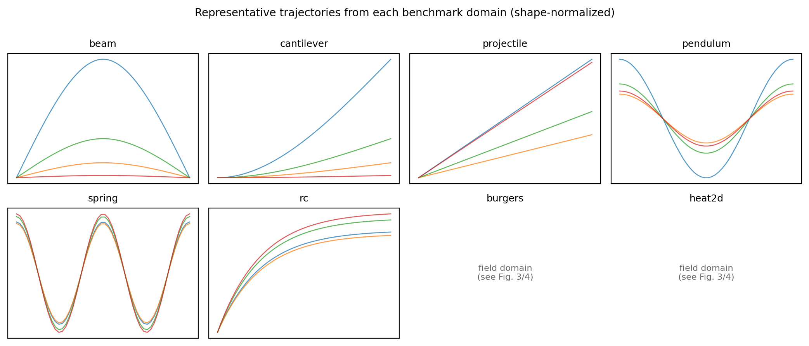
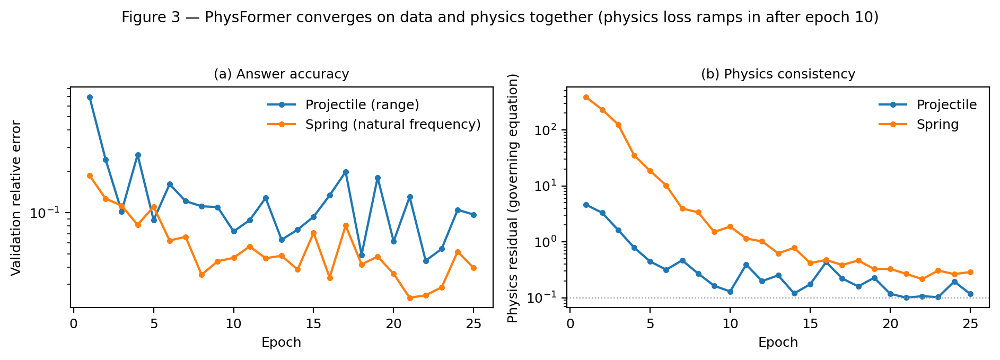

Benchmarks for physics-informed machine learning mostly share a structural weakness: the ground truth and the model are validated against the same simulation code, so agreement can reflect shared error rather than physical correctness. PhysBench is a benchmark of twelve physics domains built on the independent-verifier principle: every target is produced by a closed-form or high-resolution numerical solution implemented separately from the training signal, and every prediction is scored against an independent governing-equation residual, not the generating code. We provide a committed 75-run baseline matrix (5 domains × 3 architectures × 5 seeds) and an operator-network comparison on the ten trajectory domains. Held-out error spans two orders of magnitude across domains, and the best architecture differs by domain. PhysBench is small by design — a few hundred samples per domain, CPU-minutes — built to expose mechanisms, not to win leaderboards.
Why the independent verifier matters
Two independence conditions, both structural. Targets are generated separately from the training signal, and predictions are scored against the governing equation — finite differences, Euler/RK4, energy balance — by verifiers written from a different formulation than the data generator. That is what makes 'this model gets the physics right' mean something: 'right' is defined by code the benchmark author did not also write.

closed-form, conservation, harmonic/relaxation ODEs (spring, LC, damped), Kepler, fourth-order bending, drag, Burgers PDE, elliptic field — each with exact answers and shape-normalized targets.

5 domains × 3 architectures × 5 seeds, every stats file under physx/models/matrix/. The matrix regenerates from committed scripts.

held-out error spans the difficulty axis; the best architecture differs by domain — no universal winner, which is the point.
The operator comparison
Ten dedicated per-law DeepONets on identical splits reach median held-out trajectory error 0.037 vs. the single law-conditioned generalist's 0.110 — but they are ten separate models with no cross-law structure. The generalist wins outright on spring (0.111 vs 0.122) and LC (0.100 vs 0.192). The benchmark's point is that the right question is per-domain and per-capacity, and that independent verifiers let both statements be made precisely.
Reproduce
git clone https://github.com/sehajr-singhs/physbench cd physbench python -m unittest tests.test_physx # 49 physics tests python figs/make_figures.py # figures from committed data python src/physx/run_matrix.py # re-run the 75-run matrix (< 1 h, CPU) python src/physx/baselines.py --per-law-only # DeepONet baselines
Simulation-only, CPU-scale, deterministic seeds. No GPU required.
Sister papers in the series
Seven manuscripts, one codebase, one guarantee: every number traces to a committed JSON and regenerates from a committed script.
the system and its project root
the PhysFormer architecture; the falsified regime theory
the gate as the missing control in agent evaluation
when physics in the loss helps — and when it only enforces consistency
transfer across laws: what carries the knowledge
the cost of consistency on 2D fields